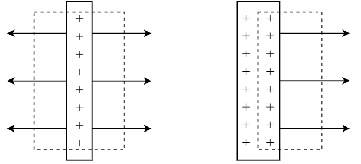
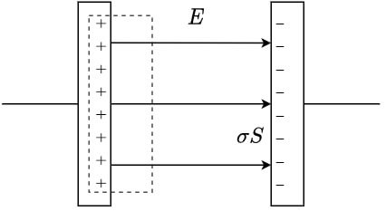
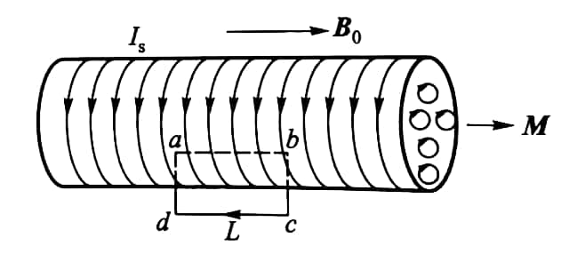

电磁学
静电场
无限大平板的电场

假设平板上的电荷 \(q = \sigma S\)，左图的分析对应
\[
\begin{aligned}
&E\cdot 2S = \frac{1}{\varepsilon_0}\sigma S\\
\Rightarrow & E = \frac{\sigma}{2\varepsilon_0}.
\end{aligned}
\]
右图的分析对应
\[
\begin{aligned}
&E\cdot S = \frac{1}{\varepsilon_0}\frac{\sigma}{2} S\\
\Rightarrow & E = \frac{\sigma}{2\varepsilon_0}.
\end{aligned}
\]
两种方法得到的结果是一致的.
电介质
...
电荷分布
若将两带电球状导体体 \(R_1\)、\(R_2\) 用导线连接，那么它们的电荷面密度满足
\[
\sigma_1 R_1 = \sigma_2 R_2.
\]
电极化
\[
\vec{P}=\frac{\sum{\vec{p}}}{\Delta V}=\chi_e \varepsilon_0 \vec{E}
\]
式中 \(\chi_e\) 为介质的电极化率 electric susceptibility.
记介质表面束缚电荷面密度 \(\sigma'\)，则
\[
P=\frac{\vert\vec{P}\vert}{\Delta V}=\frac{\sigma'\Delta SL}{\Delta SL\cos\theta}=\frac{\sigma'}{\cos\theta},
\]
\[
\sigma'=P\cos\theta=\vec{P}\cdot\vec{e}_n.
\]
电位移 电介质高斯定理
\[
\oint_S \vec{E}\cdot\text{d}\vec{S}=\frac{1}{\varepsilon_0}\left(q+q'\right),
\]
而束缚电荷反号
\[
q'=-\sigma' S=-\oint_S\vec{P}\cdot\text{d}\vec{S},
\]
所以
\[
\vec{D}=\varepsilon_0\vec{E}+\vec{P},
\]
\[
\oint_S \vec{D}\cdot\text{d}\vec{S}=q.
\]
串联电容器电压分配
由 \(Q=CV\)，\(Q\) 相等，所以 \(V\propto\dfrac{1}{C}\),
\[
V_1 C_1 =V_2 C_2.
\]
电容器
电容
\[
C=\frac{\varepsilon S}{d}
\]

\[
E = \frac{\sigma}{\varepsilon}
\]
理想状态下，电容器外侧电场强度为零，可视为两侧异号的电荷电场抵消.
电容器能量
\[
W=\frac{1}{2}CV^2
\]
静电场能量密度
\[
w=\frac{W}{V}=\frac{1}{2}\varepsilon E^2=\frac{1}{2}DE
\]
恒定磁场
电流密度
\[
\vec{J}=qn\vec{v}
\]
\[
I=\int_S \vec{J}\cdot\text{d}\vec{S}
\]
Biot-Savart Law
\[
\text{d}\vec{B}=\frac{\mu_0}{4\pi}\frac{I\text{d}\vec{l}\times\vec{r}}{r^3}
\]
\[
\vec{B}=\frac{\text{d}\vec{B}}{\text{d}N}=\frac{\mu_0}{4\pi}\frac{q\vec{v}\times\vec{r}}{r^3}
\]
安培环路定理
洛伦兹力
霍尔效应
无论载流子类型，磁场对电流的作用力方向一致，故载流子类型决定了电势差方向
安培力
\[
\text{d}\vec{F}=I\text{d}\vec{l}\times\vec{B}
\]
磁力做功
\[
A=I\Delta\varPhi_m
\]
电矩与磁矩
电矩
\[
\vec{p}=q\vec{l}
\]
由负电荷指向正电荷
\[
\vec{M}=\vec{p}\times\vec{E}
\]
磁矩
\[
\vec{m}=IS\vec{e}_n
\]
符合右手螺旋关系
\[
\vec{M}=\vec{m}\times\vec{B}
\]
磁介质
将磁介质等效为一密绕螺线管，单位长度的磁化电流 \(\alpha=\lambda_I\),
故等效附加磁矩为 \(m=\alpha LS\),
所以
\[
M=\frac{m}{\Delta V}=\frac{\alpha LS}{LS}=\alpha.
\]

\[
\oint_L \vec{M}\cdot\text{d}\vec{l}=Ml=\alpha l=I'S
\]
\(I'\) 为通过该曲面的总磁化电流.
磁介质安培环路定理
\[
\oint_L \vec{B}\cdot\text{d}\vec{l}=\mu_0\left(I+I'\right)
\]
\[
\oint_L\vec{B}\cdot\text{d}\vec{l}=\mu_0\left(I+\oint_L\vec{M}\cdot\text{d}\vec{l}\right)
\]
\[
\oint_L\left(\frac{\vec{B}}{\mu_0}-\vec{M}\right)\cdot\text{d}\vec{l}=I
\]
\[
\vec{H}=\frac{\vec{B}}{\mu_0}-\vec{M}
\]
\[
\vec{M}= \chi_m\vec{H}
\]
\[
\begin{aligned}
\vec{B}
&=\mu_0\vec{H}+\mu_0\vec{M}\\
&=\mu_0\vec{H}+\mu_0\chi_m\vec{H}\\
&=\mu\vec{H}
\end{aligned}
\]
电磁感应
法拉第电磁感应定律
\[
\mathscr{E}=-\frac{\text{d}\varPhi}{\text{d}t}
\]
若讨论的是线圈，则需要考虑匝数.
线圈产生的电动势是各匝线圈电动势之和
\[
\mathscr{E}=-\frac{\text{d}\varPsi}{\text{d}t},
\quad
\varPsi=\sum\varPhi,
\]
其中通过的电荷
\[
q=\left\vert\int I\text{d}t\right\vert=\left\vert\int \frac{\mathscr{E}}{R}\text{d}t\right\vert=\left\vert\frac{1}{R}\int \text{d}\varPhi\right\vert=\frac{1}{R}\left\vert\Delta\varPhi\right\vert.
\]
动生电动势
载流子受到洛伦兹力
\[
\vec{F}=q\vec{v}\times\vec{B},
\]
等效非静电场场强
\[
E=\frac{\vec{F}}{q}=\vec{v}\times\vec{B}.
\]
所以，动生电动势
\[
\mathscr{E}=\int_L\left(\vec{v}\times\vec{B}\right)\cdot\text{d}\vec{l}.
\]
推论：平动动生电动势等效为连接起点与终点的直导线的动生电动势.
感生电动势
若磁场变化而回路不运动，
\[
\begin{aligned}
\oint_L\vec{E}\cdot\text{d}\vec{l}
&=\mathscr{E}=-\frac{\text{d}\varPhi}{\text{d}t}\\
&=-\frac{\text{d}}{\text{d}t}\int_S\vec{B}\cdot\text{d}\vec{S}\\
&=-\int_S\frac{\partial\vec{B}}{\partial t}\cdot\text{d}\vec{S},
\end{aligned}
\]
所以
\[
\oint_L\vec{E}\cdot\text{d}\vec{l}=-\int_S\frac{\partial\vec{B}}{\partial t}\cdot\text{d}\vec{S}.
\]
自感
毕奥-萨伐尔：\(B\propto I\)，又 \(\varPsi\propto B\)，故有
\[
\varPsi=LI.
\]
其中\(L\)为自感系数，单位为 \(\text{H}=\Omega\cdot\text{s}\).
\[
\mathscr{E}_L=-\frac{\text{d}\varPhi}{\text{d}t}=-L\frac{\text{d}I}{\text{d}t}
\]
\(RL\) 串联暂态过程
\[
I=I_0\left(1-\mathrm{e}^{-\frac{t}{\tau}}\right)
\]
其中时间常量
\[
\tau=\frac{L}{R}.
\]
互感
线圈 2 处由线圈 1 电流变化产生的磁链
\[
\varPsi_{21}=M_{21}I_1,
\]
线圈 1 处由线圈 2 电流变化产生的磁链
\[
\varPsi_{12}=M_{12}I_2,
\]
而
\[
M_{21}=M_{12}=M,
\]
故
\[
\mathscr{E}_{21}=-M\frac{\text{d}I_1}{\text{d}t}\,,\qquad\mathscr{E}_{12}=-M\frac{\text{d}I_2}{\text{d}t}.
\]
磁场能量
自感线圈中，
\[
W=\frac{1}{2}LI^2,
\]
磁场能量密度
\[
w=\frac{W}{V}=\frac{1}{2}\frac{B^2}{\mu}=\frac{1}{2}BH.
\]
非恒定电流的安培环路定理 位移电流
平行板电容器电路处安培环路定理发生矛盾
由于极板电荷
\[q=\int_S\vec{D}\cdot\vec{S}=\varPhi_D,\]
线路中电流
\[I=\frac{\text{d}q}{\text{d}t}=\frac{\text{d}\varPhi_D}{\text{d}t},\]
故定义位移电流与位移电流密度
\[I_d=\frac{\text{d}\varPhi_D}{\text{d}t},\quad\vec{J}_d=\frac{\text{d}\vec{D}}{\text{d}t}.\]
所以在非恒定情况，安培环路定理为
\[\oint_L\vec{H}\cdot\text{d}\vec{l}=I+\frac{\text{d}\varPhi_D}{\text{d}t},\]
即变化的电场也能激发磁场.
麦克斯韦方程组
积分形式
\[
\begin{aligned}
&\oint_S\vec{D}\cdot\text{d}\vec{S}=\sum q\\
&\oint_S\vec{B}\cdot\text{d}\vec{S}=0\\
&\oint_L\vec{E}\cdot\text{d}\vec{l}=-\oint_S\frac{\partial\vec{B}}{\partial t}\cdot\text{d}\vec{S}\\
&\oint_L\vec{H}\cdot\text{d}\vec{l}=\oint_S\left(\vec{J}+\frac{\partial\vec{D}}{\partial t}\right)\cdot\text{d}\vec{S}
\end{aligned}
\]
微分形式
\[
\begin{aligned}
&\nabla\cdot\vec{D}=\rho\\
&\nabla\cdot\vec{B}=0\\
&\nabla\times\vec{E}=-\frac{\partial\vec{B}}{\partial t}\\
&\nabla\times\vec{H}=\vec{J}+\frac{\partial\vec{D}}{\partial t}
\end{aligned}
\]
对于各向同性介质，有
\[
\vec{D}=\varepsilon\vec{E}\,,\quad
\vec{B}=\mu\vec{H}\,,\quad
\vec{J}=\sigma\vec{E}.
\]
对于带电粒子的运动，
\[\vec{F}=q\left(\vec{E}+\vec{v}\times\vec{B}\right).\]
电磁波
nabla 算符 \(\nabla\)
\[\nabla=\left(\frac{\partial}{\partial x},\frac{\partial}{\partial y},\frac{\partial}{\partial z}\right)\]
梯度
\[\nabla F=\left(\frac{\partial F}{\partial x},\frac{\partial F}{\partial y},\frac{\partial F}{\partial z}\right)\]
散度
\[\nabla\cdot\vec{F}=\frac{\partial F_x}{\partial x}+\frac{\partial F_y}{\partial y}+\frac{\partial F_z}{\partial z}\]
旋度
\[
\nabla\times\vec{F}=
\begin{vmatrix}
\vec{\text{i}}&\vec{\text{j}}&\vec{\text{k}}\\
& &\\
\dfrac{\partial}{\partial x}&\dfrac{\partial}{\partial y}&\dfrac{\partial}{\partial z}\\
& &\\
F_x&F_y&F_z
\end{vmatrix}
\]
Laplace 算子 \(\Delta\)
\[
\Delta=\nabla^2=\nabla\cdot\nabla=\left(\frac{\partial^2}{\partial x^2}+\frac{\partial^2}{\partial y^2}+\frac{\partial^2}{\partial z^2}\right)
\]
电磁波波动方程
真空中
\[\nabla^2\vec{E}-\varepsilon_0\mu_0\frac{\partial^2\vec{E}}{\partial t^2}=0\]
\[\nabla^2\vec{B}-\varepsilon_0\mu_0\frac{\partial^2\vec{B}}{\partial t^2}=0\]
若电磁波沿\(\, x\)轴传播，则
\[\frac{\partial^2 E_y}{\partial x^2}=\varepsilon_0\mu_0\frac{\partial^2 E_y}{\partial t^2}\,,\quad\frac{\partial^2 H_z}{\partial x^2}=\varepsilon_0\mu_0\frac{\partial^2 H_z}{\partial t^2},\]
比较平面机械波波动方程有
\[c=\frac{1}{\sqrt{\varepsilon_0\mu_0}}.\]
在介质中，
\[u=\frac{1}{\sqrt{\varepsilon\mu}},\]
且满足关系
\[\sqrt{\varepsilon}E=\sqrt{\mu}H.\]
电磁波能量
\[
\begin{aligned}
w&=w_e+w_m\\
&=\frac{1}{2}\varepsilon E^2+\frac{1}{2}\mu H^2\\
&=\varepsilon E^2=\mu H^2
\end{aligned}
\]
能流密度
\[
\begin{aligned}
S&=wu\\
&=\frac{1}{2}\frac{\varepsilon E^2+\mu H^2}{\sqrt{\varepsilon\mu}}\\
&=\frac{1}{2}\frac{\sqrt{\varepsilon}E\sqrt{\mu}H+\sqrt{\mu}H\sqrt{\varepsilon}E}{\sqrt{\varepsilon\mu}}\\
&=EH
\end{aligned}
\]
即坡印廷矢量 Poynting vector
\[
\vec{S}=\vec{E}\times\vec{H}=\frac{1}{\mu}\;\vec{E}\times\vec{B}
\]
电磁振荡
\[
\omega=\frac{1}{\sqrt{LC}}
\]
\[
f=\frac{\omega}{2\pi}=\frac{1}{2\pi\sqrt{LC}}
\]